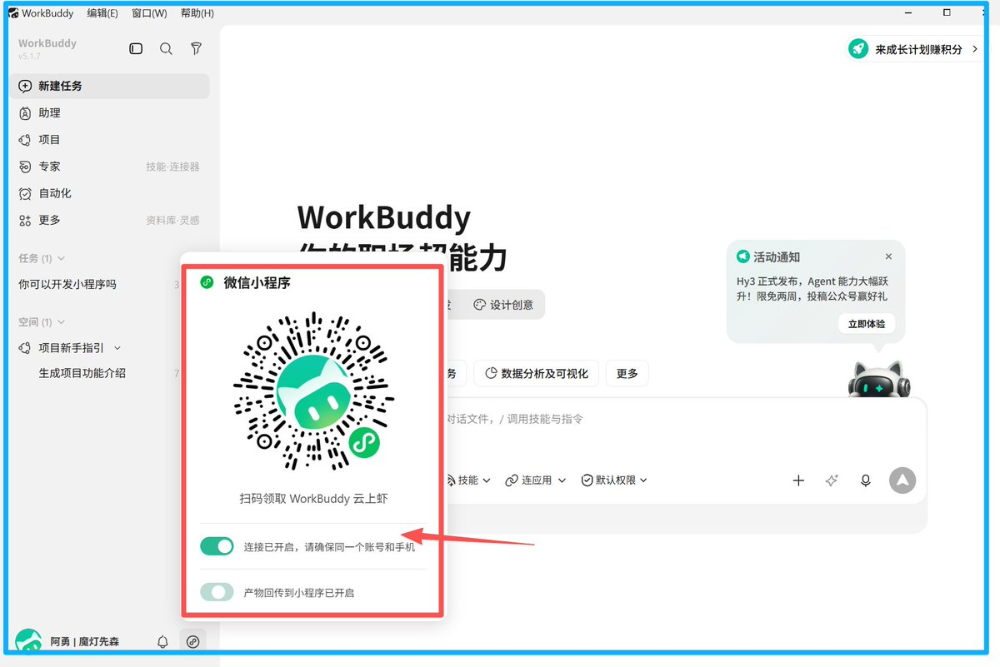

AI TOOL FIT
强，
不等于适合
Codex 很强，为什么视频号博主却选择 WorkBuddy？
COST 02
学习成本
可配置能力强，不代表使用门槛低
COST 03
时间结构
手机派活异步执行回电脑收结果
COST 05
稳定边界
可直接访问数据合规关键时刻不掉线
ASK A BETTER QUESTION
别问谁最强

工具能否进入你的真实链路？
THE REAL PRODUCTIVITY
低摩擦，
才是生产力
适合工作流
＞
参数更强
工具的终极使命：让人少折腾，多成事
来源：Modengsir AI @ModengSir · X Article
Codex 很强，视频号博主为何却选择 WorkBuddy？
别问哪个 AI 最强，要问它能否进入你的真实工作链路